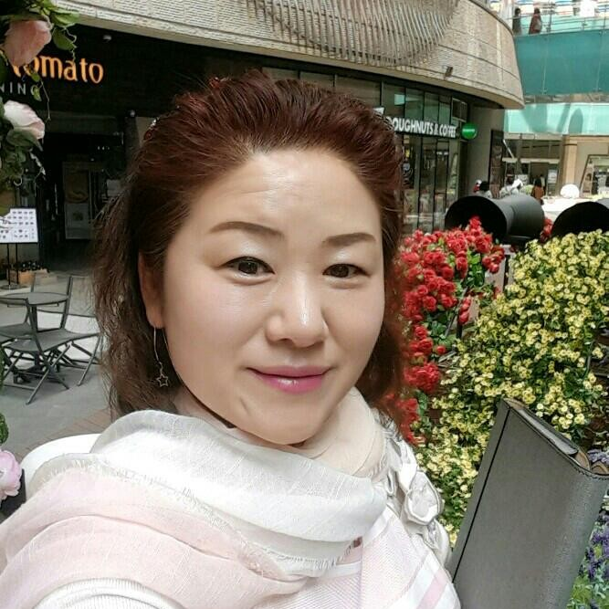

조합 설립 준비, 운영 구조 정비, 사업 모델 고도화까지 단계별로 필요한 교육과 컨설팅을 지원합니다.
Digital Profile · 서울, 경기

서 순 현
이사장
여성이 행복한 환경을 조성하고 차별 없는 세상을 만들어가는 실천하는 교육공동체. 마을기업 및 협동조합 사회연대 경제 현장에서 사람과 지역의 성장을 연결합니다.
Profile
교육과 지역경제를 연결하는 실천형 활동가
소상공인 교육, 재생에너지 강의, 협동조합 컨설팅, 상권관리와 공공도시 로컬 관리 영역에서 지역 현장에 필요한 교육과 실행 구조를 만듭니다.
Expertise
핵심 역량
현장 교육과 조직 설계, 취약계층 지원을 중심으로 역량을 정리했습니다.
지역 상권과 소상공인의 지속 가능한 운영을 위해 교육, 현장 진단, 실행 과제를 함께 설계합니다.
취약계층의 일자리 진입과 창업 준비를 돕는 교육 과정과 지역 기반 성장 프로그램을 기획합니다.
Work
현재 활동 분야
현장에서 바로 활용할 수 있는 역량 중심 교육을 설계하고 운영합니다.
지역의 삶과 이야기가 여행자에게 따뜻하게 닿도록, 공정여행 플랫폼 안에서 사람과 자원, 협력자를 잇는 다정한 연결 거점이 됩니다.
Career
경력과 방향성
지역
서울·경기권을 중심으로 교육, 컨설팅, 로컬 경제 활동을 이어갑니다.
경제
마을기업, 협동조합, 사회연대 경제의 지속 가능한 운영과 성장을 돕습니다.
교육
차별 없는 환경과 여성이 행복한 삶을 위한 실천형 교육공동체를 지향합니다.
Contact
함께 만들 교육과 지역의 변화를 이야기해주세요.
협동조합, 소상공인 교육, 공정여행 기획, 로컬 경제 활동에 관한 협업을 환영합니다.